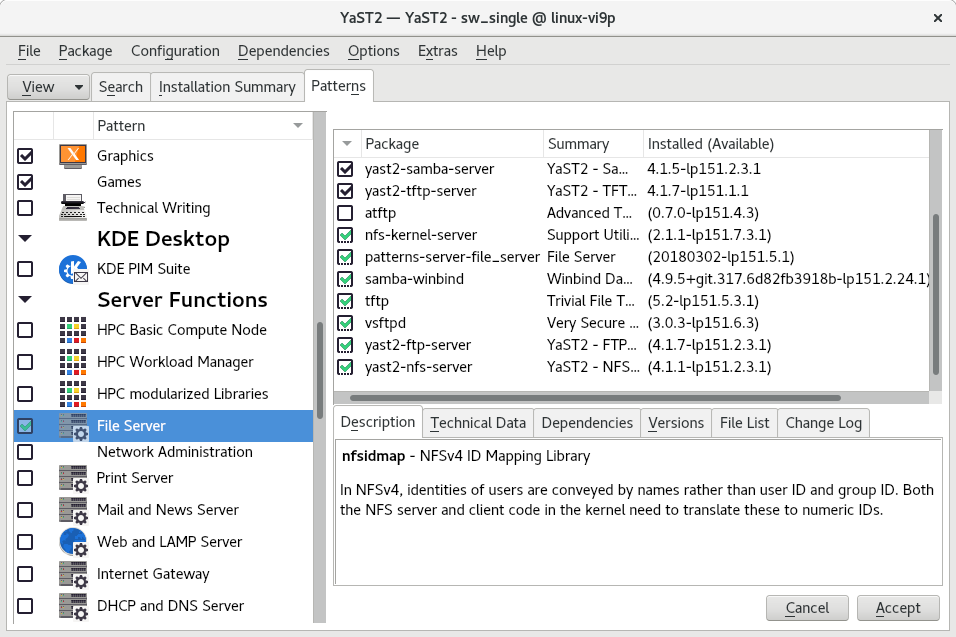
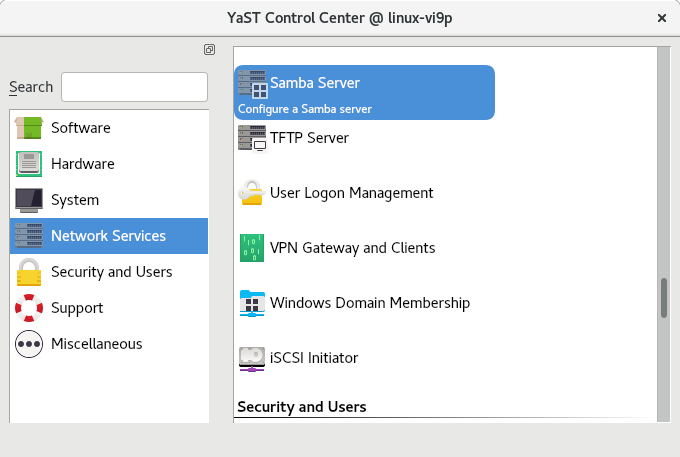
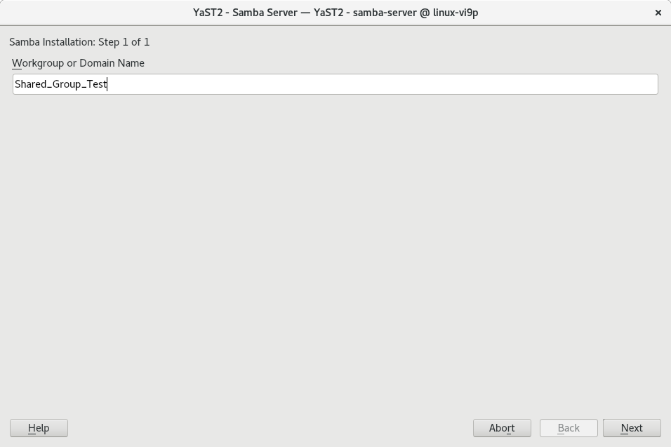
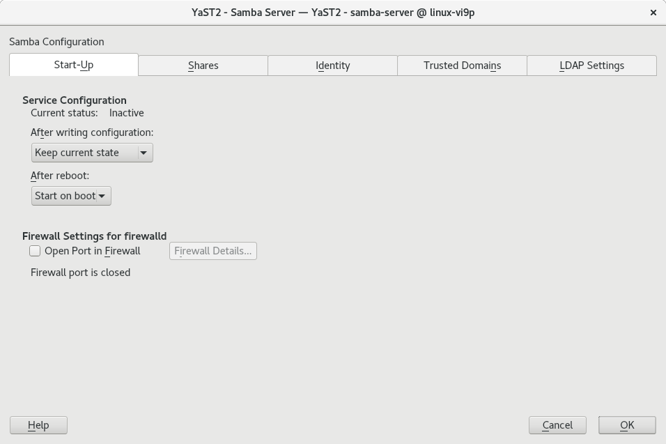
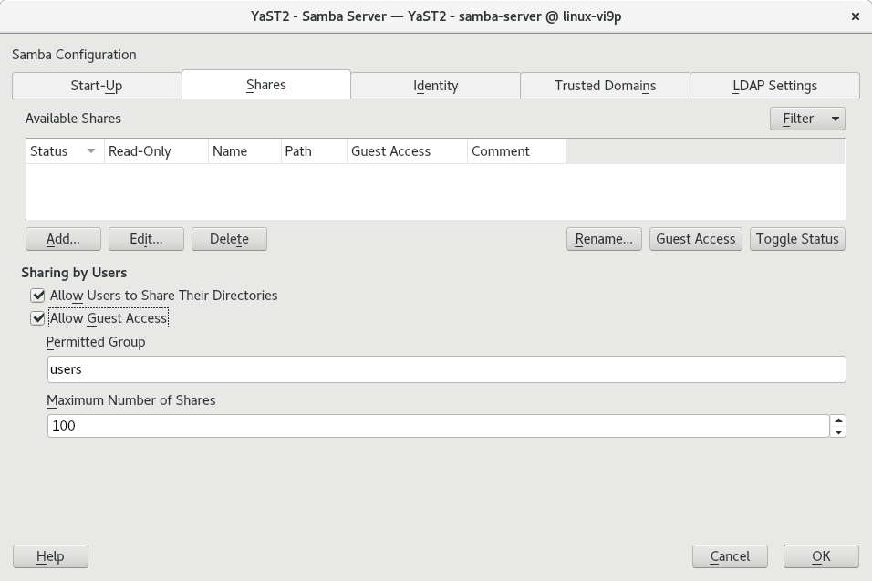
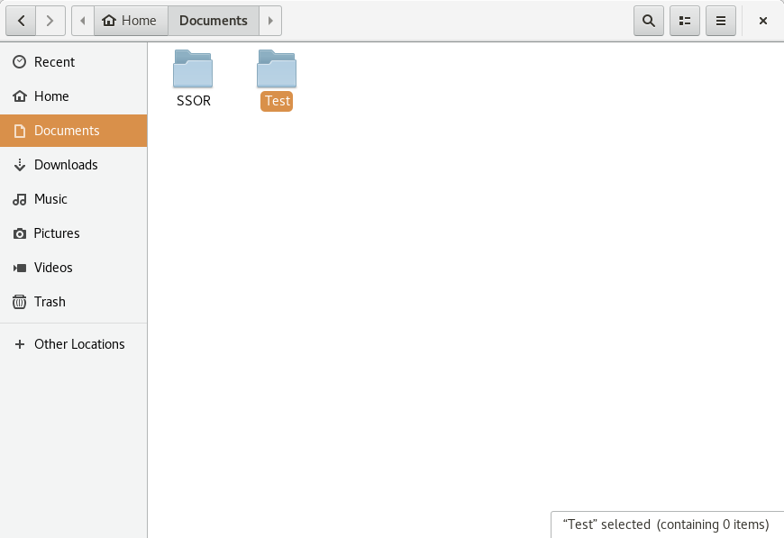
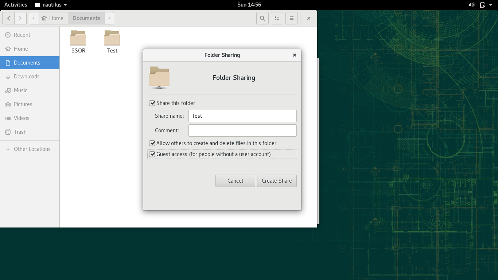
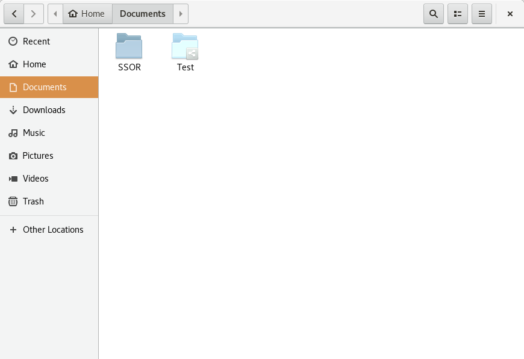

Instrucciones
- Instalar samba en windows y linux y configurar para compartir, carpetas, archivos e impresoras.
Requerimientos
- Conexión a internet para poder descargar los módulos necesarios para los procesos.
Comencemos
- Comenzaremos por descargar y configurar Samba en Linux; en nuestro caso, en OpenSUSE. Para esto iniciaremos YaST y nos dirigiremos a Software >> Software management >> Pestaña View >> Patters y seleccionaremos el recuadro con la opción File Server. Descargaremos e instalaremos todo lo que la paquetería nos ofrece.
- Una vez descargado e instalado, nos dirigiremos (en YaST) a Network Services >> Samba Server, para inicializar los servicios.
- Una vez ahí, nos pedirá que escribamos el nombre de nuestro grupo de trabajo o dominio.
- Hecho esto, seremos redirigidos a la página principal de la configuración del servicio, en donde podremos ver las diferentes pestañas con opciones de configuración del servidor. Aquí nosotros nos aseguraremos de que el servicio inicie junto con el boot, bajo la opción: after reboot.
- Ahora nos dirigiremos a la pestaña Shares, que será donde configuraremos todo lo que querramos compartir. Para empezar, permitiremos que los usuarios compartan sus directorios, y permitiremos el acceso a estos datos a usuarios sin cuenta (guests); todo esto debajo del apartado: Sharing by users. Posterior a esto daremos clic en Add, para añadir un nuevo directorio a compartir.
- Escribiremos el nombre de lo que estaremos compartiendo, por lo que no necesita ser el nombre del archivo o directorio original, sino simplemente un título, y le agregaremos una descripción. En este caso, seleccionaremos que lo que compartimos es un directorio, pero aquí mismo podemos compartir impresoras. Después agregamos la ruta del archivo que queremos compartir, y podemos dar clic en Ok si hemos terminado nuestras configuraciones. Finalmente necesitamos reiniciar nuestra computadora después de confirmar todos los cambios, para que éstos tomen efecto.
- Ahora, para completar el servicio de compartición de la carpeta, nos dirigiremos a donde se encuentra la misma. Daremos clic derecho y nos dirigiremos a sus propiedades para compartir.
- Una vez ahí, seleccionaremos la opción de compartir la carpeta, y también podremos configurar algunas opciones de permisos. Al dar clic en Create Share, podremos ver que se completa el proceso.
- Podremos observar un pequeño ícono nuevo sobre la carpeta, que nos indicará que está lista para el servicio.
- Ahora procederemos a hacer lo equivalente en nuestro Windows Server. Para esto, ejecutaremos PowerShell como administradores, e ingresaremos el siguiente comando para asegurarnos de que nuestro servicio de
Samba está disponible:
Get-SmbServerConfiguration | Select EnableSMB2Protocol
Hecho esto, ahora activaremos el servicio, mediante el comando:
Set-SmbServerConfiguration -EnableSMB2Protocol $true
- Hecho esto, nos dirigiremos a la carpeta que deseamos poder compartir, y damos clic derecho para acceder a sus propiedades. Dentro de la pestaña Compartir, ingresaremos a la opción Compartir (que está bajo el título Uso compartido de carpetas y archivos de red.)
- Ahora elegiremos con quién queremos compartir nuestra carpeta. En nuestro caso, buscamos la opción de todos los usuarios. Aquí también podemos configurar los permisos que los usuarios tendrán sobre el directorio.
- Guadaremos las configuraciones y entraremos a la opción de Uso compartido Avanzado. Allí, seleccionaremos la opción de Compartir esta carpeta, y después daremos clic en Permisos.
- Seleccionaremos los usuarios que queremos que tengan acceso a la carpeta (en nuestro caso Todos), y verificaremos los permisos que queremos que se otorguen. Después de dar clic en Aplicar y en Aceptar todos los cambios estaremos listos para poder acceder a nuestras carpetas desde los diferentes sistemas operativos que estén unidos a nuestro servior local (desde linux podemos acceder desde archivos >> otras ubicaciones, en Conectar al servidor - en la parte inferior de la ventana - poner el ip de la computadora a la cuál queremos acceder - precedido por la direccion smb://, dando clic en conectar, e ingresando con cualquiera de los usuarios que autenticamos con permisos de acceso, que en nuestro caso eran todos.).








